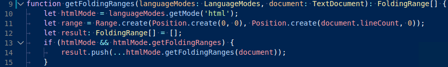
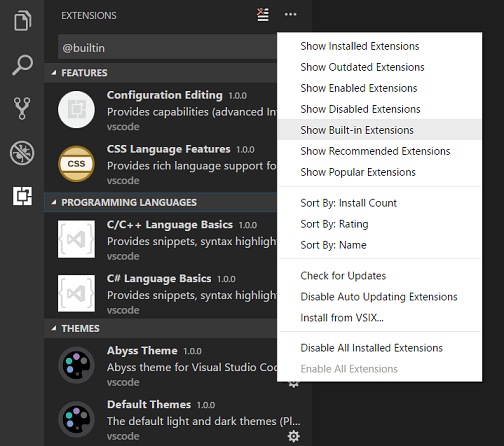

Color Themes
Color themes let you modify the colors in Visual Studio Code's user interface to suit your preferences and work environment.

Selecting the Color Theme
- In VS Code, open the Color Theme picker with File > Preferences > Color Theme. (Code > Preferences > Color Theme on macOS).
- You can also use the keyboard shortcut
kb(workbench.action.selectTheme)to display the picker. - Use the cursor keys to preview the colors of the theme.
- Select the theme you want and press
kbstyle(Enter).

The active color theme is stored in your user settings (keyboard shortcut kb(workbench.action.openSettings)).
// Specifies the color theme used in the workbench.
"workbench.colorTheme": "Default Dark+"
Tip: By default, the theme is stored in your user settings and applies globally to all workspaces. You can also configure a workspace specific theme. To do so, set a theme in the Workspace settings.
Color Themes from the Marketplace
There are several out-of-the-box color themes in VS Code for you to try.
Many more themes have been uploaded to the VS Code Extension Marketplace by the community. If you find one you want to use, install it and restart VS Code and the new theme will be available.
You can search for themes in the Extensions view (kb(workbench.view.extensions)) search box using the @category:"themes" filter.
Customizing a Color Theme
Workbench colors
You can customize your active color theme with the workbench.colorCustomizations and editor.tokenColorCustomizations user settings.
To set the colors of VS Code UI elements such as list & trees (File Explorer, suggestions widget), diff editor, Activity Bar, notifications, scroll bar, split view, buttons, and more, use workbench.colorCustomizations.

You can use IntelliSense while setting workbench.colorCustomizations values or, for a list of all customizable colors, see the Theme Color Reference.
To customize a specific theme only, use the following syntax:
"workbench.colorCustomizations": {
"[Monokai]": {
"sideBar.background": "#347890"
}
}
Editor syntax highlighting
To tune the editor's syntax highlighting colors, use editor.tokenColorCustomizations in your user settings settings.json file:

A pre-configured set of syntax tokens ('comments', 'strings', ...) is available for the most common constructs. If you want more, you can do so by directly specifying TextMate theme color rules:

Note: Directly configuring TextMate rules is an advanced skill as you need to understand on how TextMate grammars work. Go to the Color Theme guide for more information.
Again, to customize a specific theme only, use the following syntax:
"editor.tokenColorCustomizations": {
"[Monokai]": {
"comments": "#229977"
}
},
Editor semantic highlighting
Some languages (currently: TypeScript, JavaScript, Java) provide semantic tokens. Semantic tokens are based on the language service's symbol understanding and are more accurate than the syntax tokens coming from the TextMate grammars that are driven by regular expressions. The semantic highlighting that is computed from the semantic tokens goes on top of syntax highlighting and can correct and enrich the highlighting as seen in the following example:
The "Tomorrow Night Blue" color theme without semantic highlighting:

The "Tomorrow Night Blue" color theme with semantic highlighting:

Notice the color differences based on language service symbol understanding:
- line 10:
languageModesis colored as a parameter. - line 11:
RangeandPositionare colored as classes anddocumentas a parameter. - line 13:
getFoldingRangesis colored as a function.
The settings editor.semanticHighlighting.enabled serves as the main control on whether semantic highlighting is applied. It can have values true, false, and configuredByTheme.
trueandfalseturn semantic highlighting on or off for all themes.configuredByThemeis the default and lets each theme control whether semantic highlighting is enabled or not. All the themes that ship with VS Code (for example, the "Dark+" default) have semantic highlighting enabled by default.
Users can override the theme setting by:
"editor.semanticTokenColorCustomizations": {
"[Rouge]": {
"enabled": true
}
},
When semantic highlighting is enabled and available for a language, it is up to the theme to configure whether and how semantic tokens are colored. Some semantic tokens are standardized and map to well-established TextMate scopes. If the theme has a coloring rule for these TextMate scopes, the semantic token will be rendered with that color, without the need for any additional coloring rules.
Additional styling rules can be configured by the user in editor.semanticTokenColorCustomizations":
"editor.semanticTokenColorCustomizations": {
"[Rouge]": {
"enabled": true,
"rules": {
"*.declaration": { "bold": true }
}
}
},
To see what semantic tokens are computed and how they are styled, users can use the scope inspector (Developer: Inspect Editor Tokens and Scopes), which displays information for the text at the current cursor position.
If semantic tokens are available for the language at the given position and enabled by theme, the inspect tool shows a section semantic token type. The section shows the semantic token information (type and any number of modifiers) as well as the styling rules that apply.
More information on semantic tokens and styling rule syntax can be found in the Semantic Highlighting Guide.
Creating your own Color Theme
Creating and publishing a theme extension is easy. Customize your colors in your user settings then generate a theme definition file with the Developer: Generate Color Theme From Current Settings command.
VS Code's Yeoman extension generator will help you generate the rest of the extension.
See the Create a new Color Theme topic in our Extension API section to learn more.
Remove default Color Themes
If you'd like to remove some of the default themes shipped with VS Code from the Color Theme picker, you can disable them from the Extensions view (kb(workbench.view.extensions)). Open the ... More Actions dropdown menu from the top of the Extensions view, select Show Built-in Extensions, and you'll see a THEMES section listing the default themes.

You can disable a built-in theme extension as you would any other VS Code extension with the Disable command on the gear context menu.

File Icon Themes
File icon themes can be contributed by extensions and selected by users as their favorite set of file icons. File icons are shown in the File Explorer and tabbed headings.
Selecting the File Icon Theme
- In VS Code, open the File Icon Theme picker with File > Preferences > File Icon Theme. (Code > Preferences > File Icon Theme on macOS).
- You can also use the Preferences: File Icon Theme command from the Command Palette (
kb(workbench.action.showCommands)). - Use the cursor keys to preview the icons of the theme.
- Select the theme you want and hit
kbstyle(Enter).

By default, the Seti file icon set is used and those are the icons you see in the File Explorer. Once a file icon theme is selected, the selected theme will be remembered and appear again whenever VS Code is restarted. You can disable file icons by selecting None.
VS code ships with two file icon themes; Minimal and Seti. To install more file icon themes, select the Install Additional File Icon Themes item in the file icon theme picker and you'll see a query for file icon themes (tag:icon-theme) in the Extensions view.
You can also browse the VS Code Marketplace site directly to find available themes.
The active File Icon theme is persisted in your user settings (keyboard shortcut kb(workbench.action.openSettings)).
// Specifies the file icon theme used in the workbench.
"workbench.iconTheme": "vs-seti"
Creating your own File Icon Theme
You can create your own File Icon Theme from icons (preferably SVG), see the File Icon Theme topic in our Extension API section for details.
Next steps
Themes are just one way to customize VS Code. If you'd like to learn more about VS Code customization and extensibility, try these topics:
- Settings - Learn how to configure VS Code to your preferences through user and workspace settings.
- Snippets - Add additional snippets to your favorite language.
- Extension API - Learn about other ways to extend VS Code.
- Color Theme - Color Theme extension API.
- File Icon Theme - File Icon Theme extension API.